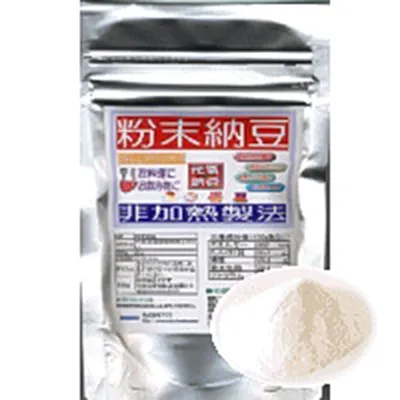
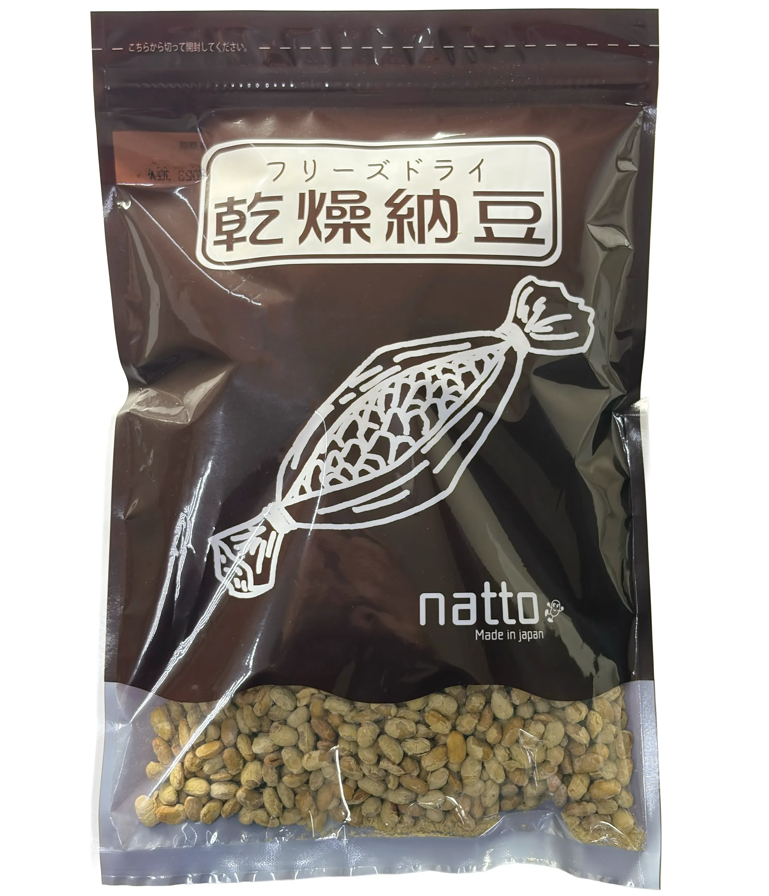
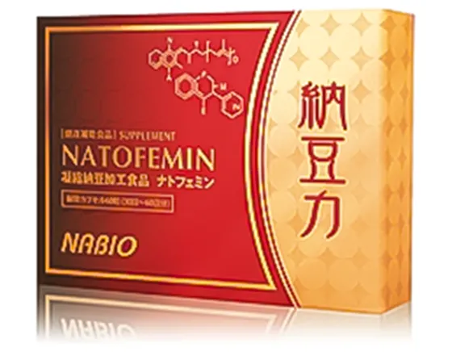

powdered natto
粉末納豆

Regular Pack
- Contents
- 70g
- Classification
- Powdered food
- Price
- 1,400円
Extra Pack
- Contents
- 200g
- Classification
- Powdered food
- Price
- 2,700円

Regular Pack
Extra Pack
ナビオの製品には、ナットウキナーゼ、FAS、ビタミンK2、ポリアミン、納豆菌がバランスよく含まれています。
たとえば、大豆成分は最小限の量、ビタミンK2は生の納豆の約1/10ですが、
ナットウキナーゼ、FAS、ポリアミン、納豆菌はそれぞれ生の納豆よりも格段に多い量が含まれます。
それぞれの成分の必要量に応じて成分を調整した製品です。
納豆に含まれる物質は大きく分けて、大豆に含まれる物質と納豆菌によって作り出された物質があります。 ナットウキナーゼ、FAS、ビタミンK2、ポリアミンなどは、納豆菌によって作り出された物質です。
納豆菌は数多くのすばらしい物質を作り出します。
その一つひとつの物質はどれもすばらしいのですが、それらの物質は相互に作用し合っています。
たとえば、FASはウロキナーゼの活性を高める物質ですが、同時にナットウキナーゼの活性も高めます。
自然の食品が持っている不思議な仕組みを生かすには、選択的濃縮技術は不可欠な技術です。
選択濃縮技術は納豆菌の作り出す物質を選択的に抽出する技術です。
納豆菌によって作り出される物質は、分子量2万以上の高分子物質群と分子量1000以下の低分子物質群に分けられます。
ナットウキナーゼは高分子物質群に属し、FAS、ビタミンK2、ポリアミンは低分子物質群に属します。
高分子物質群を抽出すると低分子物質群を含まず、
低分子物質群を抽出すると高分子物質群を含まないという問題がありました。
弊社は納豆菌の作り出す低分子物質群と高分子物質群の両方を含む製品を開発しました。
ナビオの製品は大豆と納豆菌を原料に作られますが、製品には大豆成分はほとんど含まれません。
製品に含まれる大豆は微量で、大豆遺伝子は検出限界以下です。
しかし、微量ながら大豆成分が含まれますので、
原料の大豆には安全な遺伝子組み替えでない大豆を使用しています。

乾燥納豆

natofemin natto power
Great value 2-box set
納豆菌の増殖により、ナットウキナーゼ(納豆キナーゼ)が作られます。
納豆菌は、ナットウキナーゼだけでなく、ビタミンK2やビタミンB群などの健康成分も作っています。
ナトフェミンPAは、納豆菌の生み出す成分を凝縮して作られた製品です。
酵素は最適な条件で測定した活性(含有活性)が、そのまま生体内で作用するとは限りません。
含有活性と生体内で実際に作用する実効活性の間には、大きな開きがあります。
ナットウキナーゼは酸に弱い酵素です。
含有活性が高くても、胃酸で失活すると実効活性は極端に低くなります。
弊社は実効活性の高い製品の供給に力を注いできました。
弊社は日本薬局方最新版に準拠した腸溶カプセルの製品を供給しています。
通常カプセルの製品と比べて、ナットウキナーゼの実効活性を20倍以上高めることができます。
(弊社通常カプセル製品比)

Myoka Enzyme Natto Power